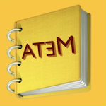
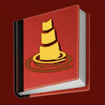

CfPBoK
by
Vadim Zaytsev
Andreas Winter
🌐

ATEM 2006 SI
📝

SLE 2008 SI
📝
Summary
Made
2
contributions (see below)
List of contributions
(
ATEM 2006 SI
)
Served as an
Editor
(
SLE 2008 SI
)
Served as an
Editor
The page is maintained by
Dr. Vadim Zaytsev
a.k.a. @
grammarware
. Last updated: July 2026.

 🌐
🌐
🌐
🌐